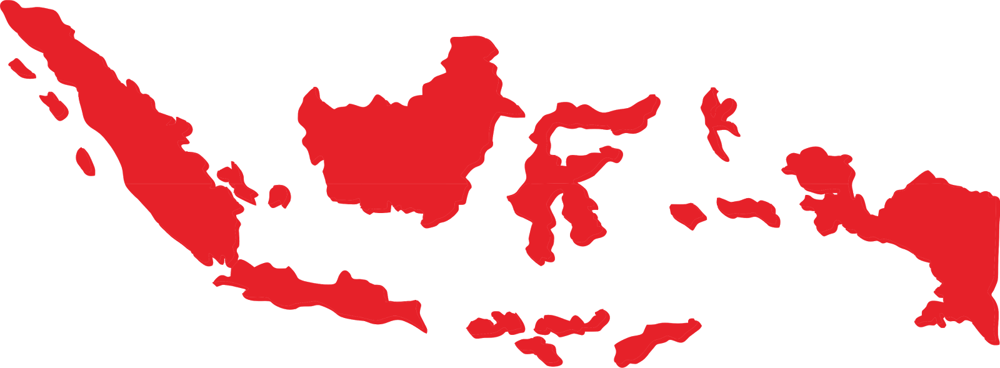
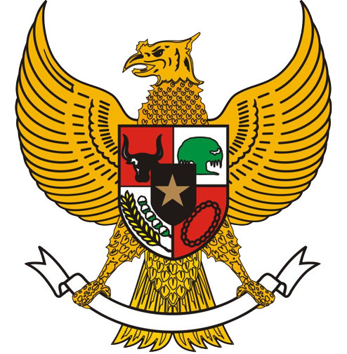

President ke 1 RI
Ir. Soekarno atau akrab dipanggil Bung Karno lahir pada 6 Juni 1901 di Surabaya, Jawa Timur dengan nama kecilnya Kusno Sosrodihardjo dan wafat pada 21 Juni 1970 di Jakarta. Bung Karno adalah anak dari pasangan Raden Soekemi Sosrodihardjo dan Ida Ayu Nyoman Rai. Karena sakit-sakitan, Soekarno kecil dirawat kakaknya bernama Raden Hardjodikromo di Tulungagung. Soekarno kembali tinggal dengan bapak dan ibunya pada 1909 di Mojokerto.
Ir. Soekarno
- Nama Lengkap: Ir.Soekarno
- Nama Panggilan: Bung Karno
- Tempat Tanggal lahir: Surabaya, 6 Juni 1901
- Agama: Islam
SEJARAH Kemerdekaan RI
Pemboman Hiroshima dan Nagasaki menjadi pertanda menyerahnya Jepang kepada Amerika dan sekutunya. Ketika bom kedua jatuh kembali di Nagasaki, Jepang menyerah kepada Amerika Serikat dan sekutunya. Hal ini dimanfaatkan oleh Indonesia. Sehari kemudian, BPUPKI (Badan Penyelidik Usaha-usaha Persiapan Kemerdekaan Indonesia) berubah nama menjadi PPKI (Panitia Persiapan Kemerdekaan Indonesia). Pada tanggal 10 Agustus 1945 pula, Sutan Syahrir telah mendengar kabar menyerahnya Jepang kepada Sekutu melalui siaran radio luar negeri yang ketika itu dilarang. Syahrir kemudian menginformasikan hal ini kepada penyair Chairil Anwar. Berita ini kemudian tersebar di lingkungan para pemuda, terutama para pendukung Syahrir.
lahirnya Pancasila
Lahirnya Pancasila adalah judul pidato yang disampaikan oleh Soekarno dalam sidang Badan Penyelidik Usaha Persiapan Kemerdekaan pada tanggal 1 Juni 1945. Dalam pidato inilah konsep dan rumusan awal "Pancasila" pertama kali dikemukakan oleh Soekarno sebagai dasar negara Indonesia merdeka. Pidato ini pada awalnya disampaikan oleh Soekarno secara aklamasi tanpa judul dan baru mendapat sebutan "Lahirnya Pancasila" oleh mantan Ketua BPUPKI Dr. Radjiman Wedyodiningrat dalam kata pengantar buku yang berisi pidato yang kemudian dibukukan oleh BPUPKI. Sejak tahun 2017, tanggal 1 Juni resmi menjadi hari libur nasional untuk memperingati hari "Lahirnya Pancasila".
sejarah President ri
our life isn't yours If you always care what others think.